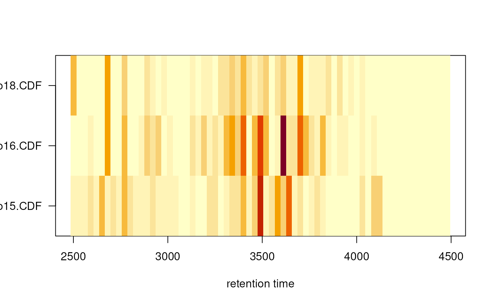
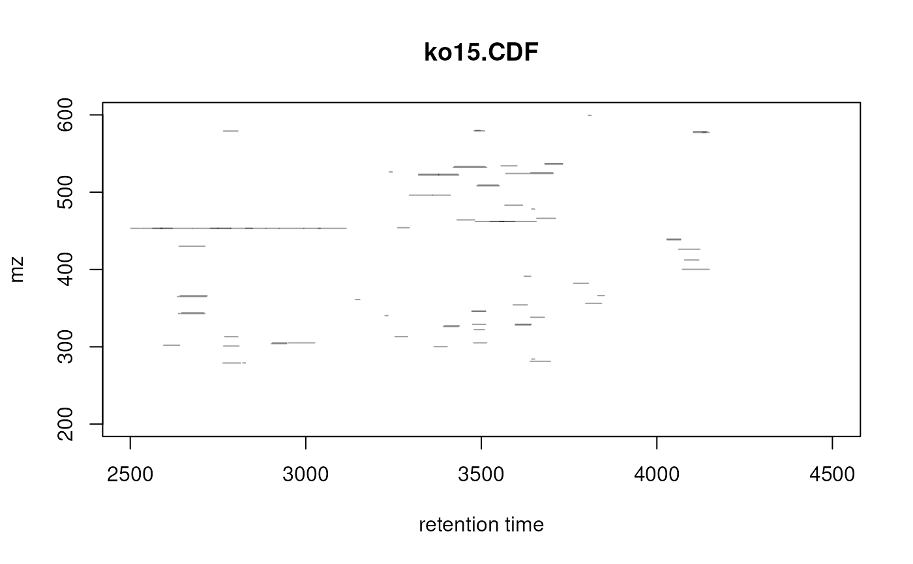
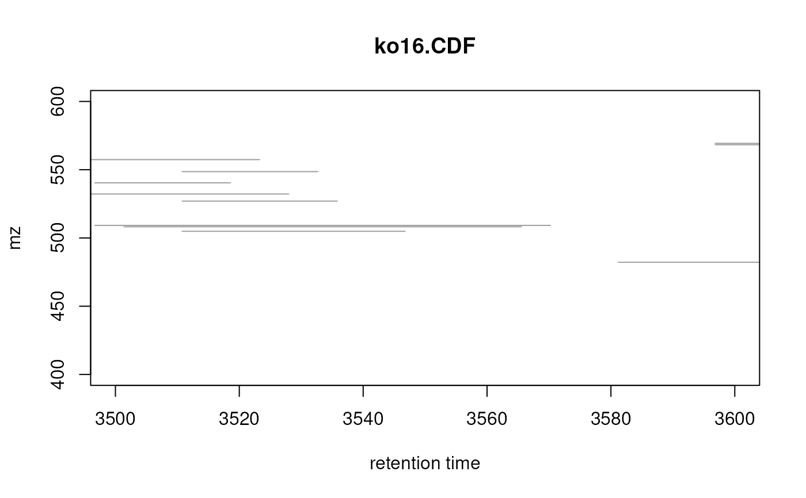

General visualizations of peak detection results
Source:R/XcmsExperiment-plotting.R
plotChromPeaks.Rd`plotChromPeaks` plots the identified chromatographic peaks from one file into the plane spanned by the retention time (x-axis) and m/z (y-axis) dimension. Each chromatographic peak is plotted as a rectangle representing its width in RT and m/z dimension.
`plotChromPeakImage` plots the number of detected peaks for each sample along the retention time axis as an *image* plot, i.e. with the number of peaks detected in each bin along the retention time represented with the color of the respective cell.
Usage
plotChromPeaks(
x,
file = 1,
xlim = NULL,
ylim = NULL,
add = FALSE,
border = "#00000060",
col = NA,
xlab = "retention time",
ylab = "mz",
main = NULL,
msLevel = 1L,
...
)
plotChromPeakImage(
x,
binSize = 30,
xlim = NULL,
log = FALSE,
xlab = "retention time",
yaxt = par("yaxt"),
main = "Chromatographic peak counts",
msLevel = 1L,
...
)Arguments
- x
A [XcmsExperiment()] or [XCMSnExp()] object.
- file
For `plotChromPeaks`: `integer(1)` specifying the index of the file within `x` for which the plot should be created. Defaults to `file = 1`.
- xlim
`numeric(2)` specifying the x-axis limits (retention time dimension). Defaults to `xlim = NULL` in which case the full retention time range of the file is used.
- ylim
For `plotChromPeaks`: `numeric(2)` specifying the y-axis limits (m/z dimension). Defaults to `ylim = NULL` in which case the full m/z range of the file is used.
- add
For `plotChromPeaks`: `logical(1)` whether the plot should be added to an existing plot or if a new plot should be created.
- border
For `plotChromPeaks`: the color for the rectangles' border.
- col
For `plotChromPeaks`: the color to be used to fill the rectangles.
- xlab
`character(1)` defining the x-axis label.
- ylab
For `plotChromPeaks`: `character(1)` defining the y-axis label.
- main
`character(1)` defining the plot title. By default (i.e. `main = NULL`) the name of the file will be used as title.
- msLevel
`integer(1)` defining the MS level from which the peaks should be visualized.
- ...
Additional arguments passed to the `plot` (for `plotChromPeaks`) and `image` (for `plotChromPeakImage`) functions. Ignored for `add = TRUE`.
- binSize
For `plotChromPeakImage`: `numeric(1)` defining the size of the bins along the x-axis (retention time). Defaults to `binSize = 30`, peaks within each 30 seconds will thus counted and plotted.
- log
For `plotChromPeakImage`: `logical(1)` whether the peak counts should be log2 transformed before plotting.
- yaxt
For `plotChromPeakImage`: `character(1)` defining whether y-axis labels should be added. To disable the y-axis use `yaxt = "n"`. For any other value of `yaxt` the axis will be drawn. See [par()] help page for more details.
Details
The width and line type of the rectangles indicating the detected chromatographic peaks for the `plotChromPeaks` function can be specified using the `par` function, i.e. with `par(lwd = 3)` and `par(lty = 2)`, respectively.
Examples
## Load a test data set with detected peaks
faahko_sub <- loadXcmsData("faahko_sub2")
## plotChromPeakImage: plot an image for the identified peaks per file
plotChromPeakImage(faahko_sub)

## Show all detected chromatographic peaks from the first file
plotChromPeaks(faahko_sub)

## Plot all detected peaks from the second file and restrict the plot to a
## mz-rt slice
plotChromPeaks(faahko_sub, file = 2, xlim = c(3500, 3600), ylim = c(400, 600))
